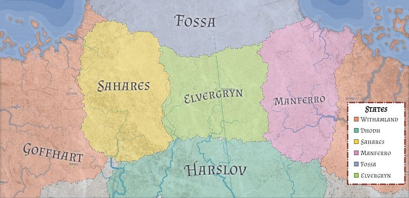

When people discovered the Abyss, a magical plague started that changed every living creature giving them magical powers and turning them hostile. People started panicking and they built a blimp city named Yllyza and crammed as much people on it as possible. A few people didn't go mad maintaining the ability to use magic, but losing the ability to die. All the nations were affected by the plague. The forestial villages of Elvergryn. The oases of Sahares. The high mountains of Fossa. The scorched lands of Manferro. The poisonous swamps of Harslov. And of course, the Golden capital Goffhart.
